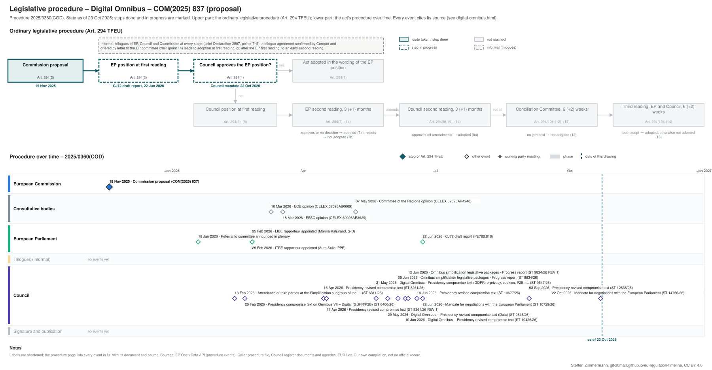

← Regulation timeline › Digital Omnibus › Legislative procedure · All procedures
Procedure 2025/0360(COD), ongoing, as of 9 Oct 2026. Drawing: SVG · PNG · PDF (A3) · draw.io · Page as Markdown: digital-omnibus.md
| Stage | EP committee stage |
|---|---|
| Parliament | draft report 22 Jun 2026 |
| Council | draft mandate before Coreper (ST 13886/26 REV 1 of 5 Oct 2026) |
| Latest activity | 5 Oct 2026 · Council: Mandate for negotiations with the European Parliament (ST 13886/26 REV 1) |
| Next steps | EP: amendments and committee vote on the report and mandate; Council: Coreper to agree the mandate (ST 13886/26 REV 1) |

| Committee | Role | Rapporteur | Shadow rapporteurs |
|---|---|---|---|
| ITRE Industry, Research and Energy | Responsible (joint committee, Rule 59) | Aura Salla (EPP), appointed 25 Feb 2026 | Elena Sancho Murillo (S&D), Julie Rechagneux (PfE), Diego Solier (ECR), Michael Mcnamara (Renew), Damian Boeselager (Greens/EFA), João Oliveira (The Left) |
| LIBE Civil Liberties, Justice and Home Affairs | Responsible (joint committee, Rule 59) | Marina Kaljurand (S&D), appointed 25 Feb 2026 | Oliver Schenk (EPP), Alexandre Varaut (PfE), Sebastian Tynkkynen (ECR), Irena Joveva (Renew), Markéta Gregorová (Greens/EFA), Pernando Barrena Arza (The Left), Mary Khan (ESN) |
| IMCO Internal Market and Consumer Protection | Opinion | Alex Agius Saliba (S&D), appointed 2 Mar 2026 | Sophia Kircher (EPP), Piotr Müller (ECR), Morten Løkkegaard (Renew), David Cormand (Greens/EFA) |
| JURI Legal Affairs | Opinion | Brando Benifei (S&D), appointed 24 Feb 2026 | Emil Radev (EPP), Ton Diepeveen (PfE), Tobiasz Bocheński (ECR), Laurence Farreng (Renew), David Cormand (Greens/EFA), Arash Saeidi (The Left) |
Source: EP Open Data API (participations) and the Legislative Observatory (joint committee, opinions declined); names link to each Member's page on the EP website. The API names no committee for shadow rapporteurs; they are assigned by the EP's order of participants, which groups each committee.
| Date | Actor | Event | Document | Source |
|---|---|---|---|---|
| 19 Nov 2025 | European Commission | Commission proposal (Art. 294(2) TFEU) | COM(2025) 837 · en.md de.md | Cellar (CELEX 52025PC0837) |
| 19 Jan 2026 | European Parliament | Referral to committee announced in plenary | EP procedure file | EP Open Data API, procedure 2025-0360 (REFERRAL) |
| 13 Feb 2026 | Council | Attendance of third parties at the Simplification subgroup of the … | ST 6311/26 | Cellar procedure file 2025/360 (Council register) |
| 20 Feb 2026 | Council | Presidency compromise text on Omnibus VII – Digital (GDPR/P2B) | ST 6406/26 · en.md | Cellar procedure file 2025/360 (Council register) |
| 25 Feb 2026 | European Parliament | ITRE rapporteur appointed (Aura Salla, PPE) | EP procedure file | EP Open Data API, procedure 2025-0360 (participation RAPPORTEUR) |
| 25 Feb 2026 | European Parliament | LIBE rapporteur appointed (Marina Kaljurand, S-D) | EP procedure file | EP Open Data API, procedure 2025-0360 (participation RAPPORTEUR) |
| 10 Mar 2026 | Consultative bodies | ECB opinion | CELEX 52026AB0009 | Cellar procedure file 2025/360 |
| 18 Mar 2026 | Consultative bodies | EESC opinion | CELEX 52025AE3929 | Cellar procedure file 2025/360 |
| 15 Apr 2026 | Council | Presidency revised compromise text | ST 8261/26 · en.md | Parliament of Austria, EU database (interinstitutional file 2025/0360(COD)) |
| 17 Apr 2026 | Council | Presidency revised compromise text | ST 8261/26 REV 1 · en.md | Cellar procedure file 2025/360 (Council register) |
| 7 May 2026 | Consultative bodies | Committee of the Regions opinion | CELEX 52025AR4240 | Cellar procedure file 2025/360 |
| 21 May 2026 | Council | Digital Omnibus - Presidency compromise text (GDPR, e-privacy, cookies, P2B, cyber … | ST 9547/26 · en.md | Cellar procedure file 2025/360 (Council register) |
| 29 May 2026 | Council | Digital Omnibus – Presidency revised compromise text (Data) | ST 9845/26 · en.md | Cellar procedure file 2025/360 (Council register) |
| 5 Jun 2026 | Council | Omnibus simplification legislative packages - Progress report | ST 9834/26 · en.md | Cellar procedure file 2025/360 (Council register) |
| 10 Jun 2026 | Council | Digital Omnibus – Presidency revised compromise text | ST 10426/26 · en.md | Cellar procedure file 2025/360 (Council register) |
| 12 Jun 2026 | Council | Omnibus simplification legislative packages - Progress report | ST 9834/26 REV 1 · en.md de.md | Cellar procedure file 2025/360 (Council register) |
| 18 Jun 2026 | Council | Presidency revised compromise text | ST 10677/26 · en.md | Parliament of Austria, EU database (interinstitutional file 2025/0360(COD)) |
| 22 Jun 2026 | Council | Mandate for negotiations with the European Parliament | ST 10729/26 · en.md | Parliament of Austria, EU database (interinstitutional file 2025/0360(COD)) |
| 22 Jun 2026 | European Parliament | CJ72 draft report | PE786.818 · en.md de.md | EP Open Data API, procedure 2025-0360 (COMMITTEE_TABLING_REPORT) |
Every document the Council register, the EU database of the Parliament of Austria or the EP lists for the procedure, with its state: public documents link to the official file; documents that are not public link to their entry in the Austrian database where there is one (metadata only). Status: public; not public; not public, leak available (an unofficial copy is known to circulate outside the institutions; it is neither published nor quoted here). Released: when a document listed as not public was released, by the date of the Council's public PDF (a technical date) or else the day our daily check found it public.
| Date | Document | Kind | Subject | Status | Released | Text |
|---|---|---|---|---|---|---|
| 20 Nov 2025 | ST 15698/25 | council-transmission | Proposal for a REGULATION OF THE EUROPEAN PARLIAMENT AND OF THE COUNCIL amending Regulations (EU) 2016/679, (EU) 2018/1724, (EU) 2018/1725, (EU) 2023/2854 and … | public | – | – |
| 20 Nov 2025 | ST 15698/25 ADD 1 | council-transmission | ANNEXES to the proposal for a REGULATION OF THE EUROPEAN PARLIAMENT AND OF THE COUNCIL amending Regulations (EU) 2016/679, (EU) 2018/1724, (EU) 2018/1725, (EU) … | public | – | – |
| 20 Nov 2025 | ST 15698/25 ADD 2 | council-transmission | COMMISSION STAFF WORKING DOCUMENT Accompanying the documents Proposal for a REGULATION OF THE EUROPEAN PARLIAMENT AND OF THE COUNCIL Amending Regulations (EU) … | public | – | – |
| 21 Nov 2025 | WK 15969/25 | council-note | Digital Omnibus – Presentation by the Commission | public | – | – |
| 29 Nov 2025 | WK 16524/25 | council-note | Digital Omnibus and Digital Omnibus on Artificial Intelligence (AI) - Comments from Austria and other Member States | public | – | – |
| 1 Dec 2025 | WK 16586/25 | council-note | Digital Omnibus – Presentation by the Commission (AGS on 1 December) | public | – | – |
| 4 Dec 2025 | ST 16131/25 REV 1 | council-note | Simplification a) 2025 Annual Overview Report b) Annual Progress Reports - Presentation by the Commission - Exchange of views | public | – | – |
| 8 Dec 2025 | WK 17004/25 | council-note | Digital Omnibus and Digital Omnibus on AI - Comments from Austria and other Member States | public | – | – |
| 15 Dec 2025 | WK 17297/25 | council-note | Digital Omnibus – Presentation by the Commission (AGS on 12 December) | public | – | – |
| 9 Jan 2026 | WK 250/26 | council-note | Presidency discussion note for the AGS on 16 January 2026 | public | – | – |
| 9 Jan 2026 | WK 252/26 | council-note | Priorities and work programme of the Cyprus Presidency - Presentation by the Presidency (AGS on 9 January 2026) | public | – | – |
| 16 Jan 2026 | WK 448/26 | council-note | Digital Omnibus – Presentation by the Commission (AGS on 16 January 2026) | public | – | – |
| 27 Jan 2026 | WK 1138/26 | council-note | Digital Omnibus - Compiled follow-up comments from Austria and other Member States | public | – | – |
| 3 Feb 2026 | WK 1701/26 | council-note | Proposal for a Regulation of the European Parliament and of the Council amending Regulations (EU) 2016/679, (EU) 2018/1724, (EU) 2018/1725, (EU) 2023/2854 and … | public | – | – |
| 6 Feb 2026 | ST 6056/26 | council-note | Optional consultation of the Committee of the Regions | public | – | – |
| 6 Feb 2026 | WK 2045/26 | council-note | Presidency discussion note for the AGS on 13 February 2026 | public | – | – |
| 9 Feb 2026 | WK 2134/26 | council-note | Digital Omnibus – Presentation by the Commission (AGS on 13 February 2026) | public | – | – |
| 13 Feb 2026 | ST 6311/26 | council-item-note | Attendance of third parties at the Simplification subgroup of the Antici Group on 27 February 2026 - Approval | public | – | – |
| 13 Feb 2026 | WK 2399/26 | council-note | Follow-up to the AGS of 13 February – Presentation by the Commission on cybersecurity issues | public | – | – |
| 20 Feb 2026 | ST 6406/26 | council-compromise | Presidency compromise text on Omnibus VII – Digital (GDPR/P2B) | public | – | en |
| 20 Feb 2026 | WK 2800/26 | council-note | explanatory note of the Presidency compromise text – AGS meeting on 27/02/2026 | public | – | – |
| 20 Feb 2026 | WK 2802/26 | council-note | Presidency discussion note on GDPR - AGS 27.02.26 | public | – | – |
| 20 Feb 2026 | WK 2859/26 | council-note | EDPB-EDPS Joint opinion on the Digital Omnibus | public | – | – |
| 24 Feb 2026 | ST 6575/26 | council-note | Opinion on the application of the Principles of Subsidiarity and Proportionality - Cover note from the Czech Senate | not public* | – | – |
| 5 Mar 2026 | WK 3627/26 | council-note | Non-Paper on Single Entry point for incident notifications by France, Germany, Italy, the Netherlands, Spain and Sweden | public | – | – |
| 10 Mar 2026 | CELEX 52026AB0009 | opinion | Opinion of the European Central Bank of 10 March 2026 on a proposed regulation as regards the simplification of the digital legislative framework (Digital … | public | – | – |
| 10 Mar 2026 | ST 7005/26 | council-note | Opinion on the application of the Principles of Subsidiarity and Proportionality - Cover note from the Italian Senate | not public* | – | – |
| 10 Mar 2026 | ST 7068/26 | council-note | COMMUNICATION FROM THE COMMISSION TO THE EUROPEAN PARLIAMENT AND THE COUNCIL DATA UNION STRATEGY UNLOCKING DATA FOR AI [15712/25 - COM(2025)835] Proposal for a … | not public* | – | – |
| 11 Mar 2026 | ST 7244/26 | council-transmission | European Central Bank/ ECB Opinion | public | – | – |
| 11 Mar 2026 | WK 3735/26 | council-note | Drafting suggestions on the Commission proposal on Cyber and data issues (deadline 27.02 extension to 6.03.26) | public | – | – |
| 11 Mar 2026 | WK 3735/26 ADD 1 | council-note | Drafting suggestions on the Commission proposal on Cyber and data issues (deadline 27.02 extension to 6.03.26) - additional comments from CZ & NL | public | – | – |
| 12 Mar 2026 | WK 3735/26 ADD 2 | council-note | Drafting suggestions on the Commission proposal on Cyber and data issues (deadline 27.02 extension to 6.03.26) - additional comments from EE | public | – | – |
| 18 Mar 2026 | CELEX 52025AE3929 | opinion | Opinion of the European Economic and Social Committee a) Proposal for a Regulation of the European Parliament and of the Council amending Regulations (EU) … | public | – | – |
| 18 Mar 2026 | WK 3735/26 ADD 3 | council-note | Drafting suggestions on the Commission proposal on Cyber and data issues (deadline 27.02 extension to 6.03.26) - additional comments from AT | public | – | – |
| 19 Mar 2026 | WK 3736/26 | council-note | Consultation on Omnibus VII (GDPR/P2B/ePrivacy) digital rules - related to AGS meeting of 27.02.26 (deadline 18.03.26) - first compiled comments: CZ, DE , EE, … | public | – | – |
| 19 Mar 2026 | WK 3736/26 ADD 1 | council-note | Consultation on Omnibus VII (GDPR/P2B/ePrivacy) Digital rules - related to AGS meeting of 27.02.26 (deadline 18.03.26) - consolidated written comments on … | public | – | – |
| 19 Mar 2026 | WK 3736/26 ADD 2 | council-note | Consultation on Omnibus VII (GDPR/P2B/ePrivacy) Digital rules - related to AGS meeting of 27.02.26 (deadline 18.03.26) - consolidated written comments on … | public | – | – |
| 23 Mar 2026 | WK 3735/26 ADD 4 | council-note | Drafting suggestions on the Commission proposal on Cyber and data issues (deadline 27.02 extension to 6.03.26) - additional comments from DK (Cyber only) | public | – | – |
| 23 Mar 2026 | WK 3736/26 ADD 3 | council-note | Consultation on Omnibus VII (GDPR/P2B/ePrivacy) Digital rules - related to AGS meeting of 27.02.26 (deadline 18.03.26) - consolidated written comments on … | public | – | – |
| 26 Mar 2026 | ST 7720/26 | council-note | COMMUNICATION FROM THE COMMISSION TO THE EUROPEAN PARLIAMENT AND THE COUNCIL DATA UNION STRATEGY UNLOCKING DATA FOR AI [15712/25 - COM(2025)835] Proposal for a … | not public* | – | – |
| 8 Apr 2026 | ST 8033/26 | council-note | Opinion on the application of the Principles of Subsidiarity and Proportionality - Cover note from the Senate of Romania | not public* | – | – |
| 15 Apr 2026 | ST 8261/26 | council-compromise | Presidency revised compromise text | public | – | en |
| 17 Apr 2026 | ST 8261/26 REV 1 | council-compromise | Presidency revised compromise text | public | – | en |
| 17 Apr 2026 | WK 5494/26 | council-note | Explanatory note accompanying the Presidency compromise text (AGS meeting on 24 April 2026) | public | – | – |
| 23 Apr 2026 | WK 5822/26 | council-note | Non-paper SPAIN: amending Article 49 of the GDPR in relation to the exchange of tax data (Omnibus VII-Digital Omnibus) | public | – | – |
| 24 Apr 2026 | WK 5890/26 | council-note | Follow-up to the AGS of 24 April 2026 - Presentation of the European Central Bank | public | – | – |
| 30 Apr 2026 | WK 6156/26 | council-note | Explanatory note on Cyber and Data accompanying the Presidency’s revised compromise text | public | – | – |
| 7 May 2026 | CELEX 52025AR4240 | opinion | Opinion of the European Committee of the Regions – Digital simplification and Data Union Strategy | public | – | – |
| 7 May 2026 | ST 9035/26 | council-note | Opinion on the application of the Principles of Subsidiarity and Proportionality - Cover note from the Senate of the Republic of Poland | not public* | – | – |
| 13 May 2026 | ST 9219/26 | council-note | Opinion on the application of the Principles of Subsidiarity and Proportionality - Cover note from the Irish Houses of the Oireachtas | not public* | – | – |
| 21 May 2026 | ST 9547/26 | council-compromise | Digital Omnibus - Presidency compromise text (GDPR, e-privacy, cookies, P2B, cyber provisions) | public | – | en |
| 21 May 2026 | WK 6642/26 | council-note | Joint compilation and additional comments from Austria and other Member States | public status unknown | – | – |
| 22 May 2026 | WK 7178/26 | council-note | Explanatory note by the Presidency - AGS meeting on 27 May 2026 | public | – | – |
| 28 May 2026 | WK 7612/26 | council-note | Non-paper from Poland concerning Digital Omnibus provisions on cookies | not public* | – | – |
| 29 May 2026 | ST 9845/26 | council-compromise | Digital Omnibus – Presidency revised compromise text (Data) | public | – | en |
| 1 Jun 2026 | ST 9773/26 | council-note | Guidance for further work | public | – | – |
| 4 Jun 2026 | ST 9773/26 REV 1 | council-note | Guidance for further work | public | – | – |
| 4 Jun 2026 | WK 7876/26 | council-note | Written comments - suggestions from Austria and other Member States on the Presidency revised compromise text (P2B, GDPR, e-privacy - cookies, cyber) | public | – | – |
| 5 Jun 2026 | ST 9834/26 | council-progress-report | Omnibus simplification legislative packages - Progress report | public | – | en |
| 10 Jun 2026 | ST 10426/26 | council-compromise | Digital Omnibus – Presidency revised compromise text | public | – | en |
| 11 Jun 2026 | WK 8070/26 | council-note | Presidency note - AGS meeting on 15 June 2026 | public | – | – |
| 12 Jun 2026 | ST 9834/26 REV 1 | council-progress-report | Omnibus simplification legislative packages - Progress report | public | – | en de |
| 18 Jun 2026 | ST 10677/26 | council-compromise | Presidency revised compromise text | public | – | en |
| 19 Jun 2026 | WK 8978/26 | council-note | Draft proposal for a Regulation of the European Parliament and of the Council amending Regulations (EU) 2016/679, (EU) 2018/1724, (EU) 2018/1725, (EU) … | public | – | – |
| 22 Jun 2026 | PE786.818 | ep-draft-report | DRAFT REPORT on the proposal for a regulation of the European Parliament and of the Council amending Regulations (EU) 2016/679, (EU) 2018/1724, (EU) 2018/1725, … | public | – | en de |
| 22 Jun 2026 | ST 10729/26 | council-position | Mandate for negotiations with the European Parliament | public | – | en |
| 26 Jun 2026 | ST 11036/26 | council-note | Simplification: state of play and future orientation - Exchange of views | public | – | – |
| 9 Jul 2026 | WK 10233/26 | council-note | Presidency Discussion Note | public | – | – |
| 13 Jul 2026 | ST 11036/26 COR 1 | council-note | Simplification: state of play and future orientation - Exchange of views | public | – | – |
| 27 Jul 2026 | PE786.820 | ep-amendments | public status unknown | – | – | |
| 27 Jul 2026 | PE790.967 | ep-amendments | public status unknown | – | – | |
| 27 Jul 2026 | PE790.968 | ep-amendments | public status unknown | – | – | |
| 27 Jul 2026 | PE791.071 | ep-amendments | public status unknown | – | – | |
| 27 Jul 2026 | PE791.072 | ep-amendments | public status unknown | – | – | |
| 27 Jul 2026 | PE791.073 | ep-amendments | public status unknown | – | – | |
| 27 Jul 2026 | PE791.873 | ep-amendments | public status unknown | – | – | |
| 27 Jul 2026 | PE791.874 | ep-amendments | public status unknown | – | – | |
| 27 Jul 2026 | PE791.883 | ep-amendments | public status unknown | – | – | |
| 31 Jul 2026 | WK 11020/26 | council-note | Written comments and drafting suggestions from Austria and other Member States on the Presidency revised compromise text on the draft proposal for a Regulation … | public | – | – |
| 20 Aug 2026 | WK 12980/26 | council-note | Non-paper from Poland on the proposed changes to the Open Data Directive under Omnibus VII (Digital) | public | 8 Oct 2026 | – |
| 3 Sep 2026 | ST 12535/26 | council-compromise | Presidency revised compromise text | not public* | – | – |
| 4 Sep 2026 | WK 13065/26 | council-note | Steering and Explanatory Note by the Presidency - AGS meeting on 11 September 2026 | not public* | – | – |
| 9 Sep 2026 | WK 13769/26 | council-note | Proposal from Germany on low-risk controller | not public* | – | – |
| 10 Sep 2026 | ST 12955/26 | council-note | AOB item for the meeting of the General Affairs Council on 22 September 2026 Omnibus simplification packages: state of play - Information from the Presidency | public | – | – |
| 17 Sep 2026 | WK 14249/26 | council-note | Draft proposal for a Regulation amending Regulations (EU) 2016/679, (EU) 2018/1724, (EU) 2018/1725, (EU) 2023/2854, (EU) 2024/1689 and Directives 2002/58/EC, … | not public* | – | – |
| 17 Sep 2026 | WK 14298/26 | council-note | Non-paper from Poland on Digital Omnibus provisions concerning cookies | not public* | – | – |
| 21 Sep 2026 | ST 13112/26 | council-compromise | Presidency revised compromise text | not public* | – | – |
| 21 Sep 2026 | ST 13399/26 | council-note | AOB item for the meeting of the General Affairs Council of 22 September 2026 Simplification - Information from Austria | public | – | – |
| 22 Sep 2026 | WK 14017/26 | council-note | Steering and Explanatory Note by the Presidency - AGS meeting on 25 September 2026 | not public* | – | – |
| 1 Oct 2026 | WK 15043/26 | council-note | Draft proposal for a Regulation amending Regulations (EU) 2016/679, (EU) 2018/1724, (EU) 2018/1725, (EU) 2023/2854, (EU) 2024/1689 and Directives 2002/58/EC, … | not public* | – | – |
| 2 Oct 2026 | ST 13886/26 | council-position | Mandate for negotiations with the European Parliament Our summary (Not public: not released by the institution and unofficially leaked; we neither publish nor quote it. Our summary describes it in general terms only.): Note of the Council's General Secretariat to Coreper of 2 October 2026 with the Presidency's proposed mandate for negotiations with the European Parliament on the Digital Omnibus: the full compromise text on the data rules (Data Act and the consolidated data acquis), the GDPR, the cookie rules of the ePrivacy Directive and a single entry point for reporting cyber and data incidents. A draft put to Coreper, not a position of the Council until Coreper agrees it, and not law. The note says that an agreed mandate will be made public unless Coreper objects, so an official release of the agreed text is likely. | not public, leak available* | – | – |
| 5 Oct 2026 | ST 13886/26 REV 1 | council-position | Mandate for negotiations with the European Parliament | not public* | – | – |
* Not public: the registers are checked again daily until the document is released; last check 9 Oct 2026.
Unofficial Markdown conversions for reading, searching and project folders; only the official document is authentic. "Read" opens the rendered text on GitHub, where a link to a provision (#art-13, #rec-12, #annex-i) jumps to it.
| Date | Stage | Document | Markdown | Read |
|---|---|---|---|---|
| 19 Nov 2025 | com-proposal | CELEX 52025PC0837 | en de | GitHub |
| 20 Feb 2026 | council-compromise | ST 6406/26 | en | GitHub |
| 15 Apr 2026 | council-compromise | ST 8261/26 | en | GitHub |
| 17 Apr 2026 | council-compromise | ST 8261/26 REV 1 | en | GitHub |
| 21 May 2026 | council-compromise | ST 9547/26 | en | GitHub |
| 29 May 2026 | council-compromise | ST 9845/26 | en | GitHub |
| 5 Jun 2026 | council-progress-report | ST 9834/26 | en | GitHub |
| 10 Jun 2026 | council-compromise | ST 10426/26 | en | GitHub |
| 12 Jun 2026 | council-progress-report | ST 9834/26 REV 1 | en de | GitHub |
| 18 Jun 2026 | council-compromise | ST 10677/26 | en | GitHub |
| 22 Jun 2026 | ep-draft-report | PE786.818 | en de | GitHub |
| 22 Jun 2026 | council-position | ST 10729/26 | en | GitHub |
Standardisation requests (Art. 10 of Regulation (EU) No 1025/2012) ask CEN, CENELEC and ETSI to draft harmonised standards in support of the act; standards cited in the Official Journal give a presumption of conformity. Planned requests come from the Commission's annual Union work programmes for European standardisation (Art. 8), which are plans, not decisions. Deadlines as set in the request's annexes (hand-checked).
| Year | Action (open for its text) |
|---|---|
| 2026 | 7. Machine-readable expression of consent choices
Work programme 2026, Annex, Action 7: en.md · de.md · original on EUR-Lex ↗ |